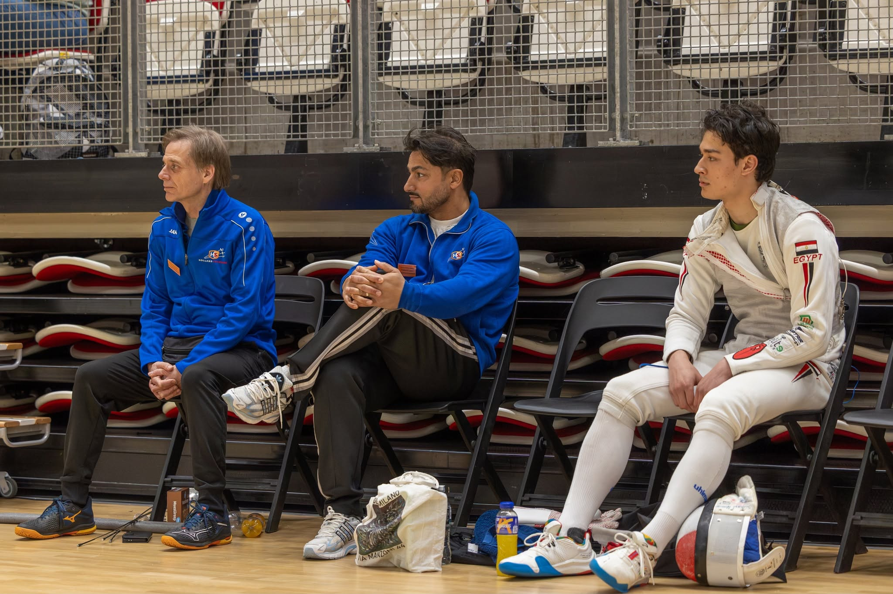

Topsport bij KNAS
KNAS investeert in talentontwikkeling en internationale deelname via programma's als Oranje, DBT, FBT, SBT en ondersteuning richting EK/WK en wereldbekers.
Belangrijke thema's
- Talentontwikkeling en doorstroming
- Internationale titeltoernooien
- Samenwerking met coaches en atletencommissie
